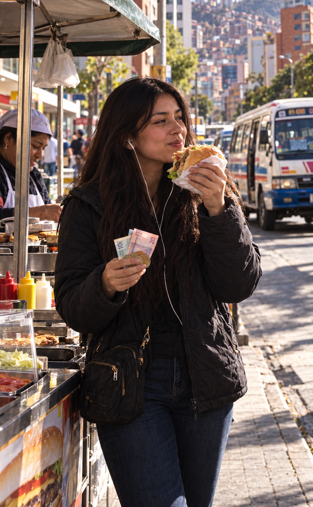

3/3
Camino Final: La Parada Estratégica
🔊 Narración:
Intimidada por las miradas, Alía rasca el fondo de su mochila y junta 3 en monedas de 20 centavos. Paga y se baja rápidamente en Calacoto para huir de la tensión.
Justo en la esquina encuentra un puesto de comida, se compra una hamburguesa con su billete de 100 y toma el siguiente minibús con el estomago lleno y una sonrisa de victoria.
♦ ───── ♦
Una retirada táctica
A veces la mejor manera de ganar una batalla es abandonarla a tiempo para ir a cenar.